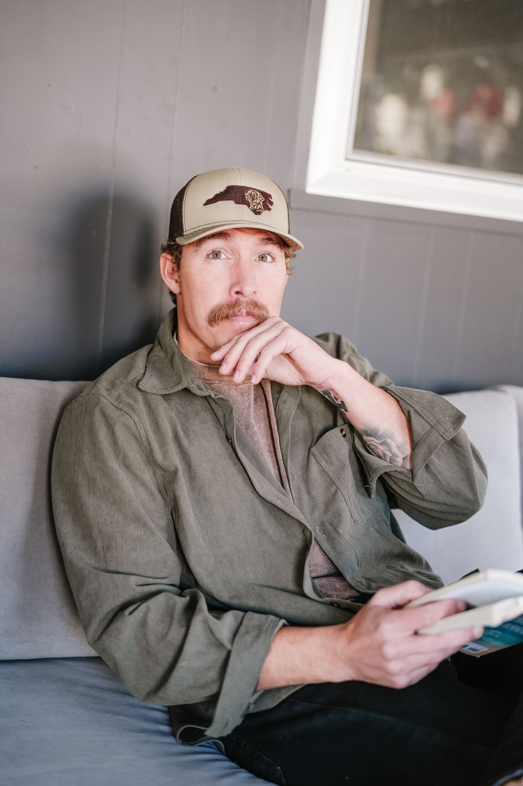
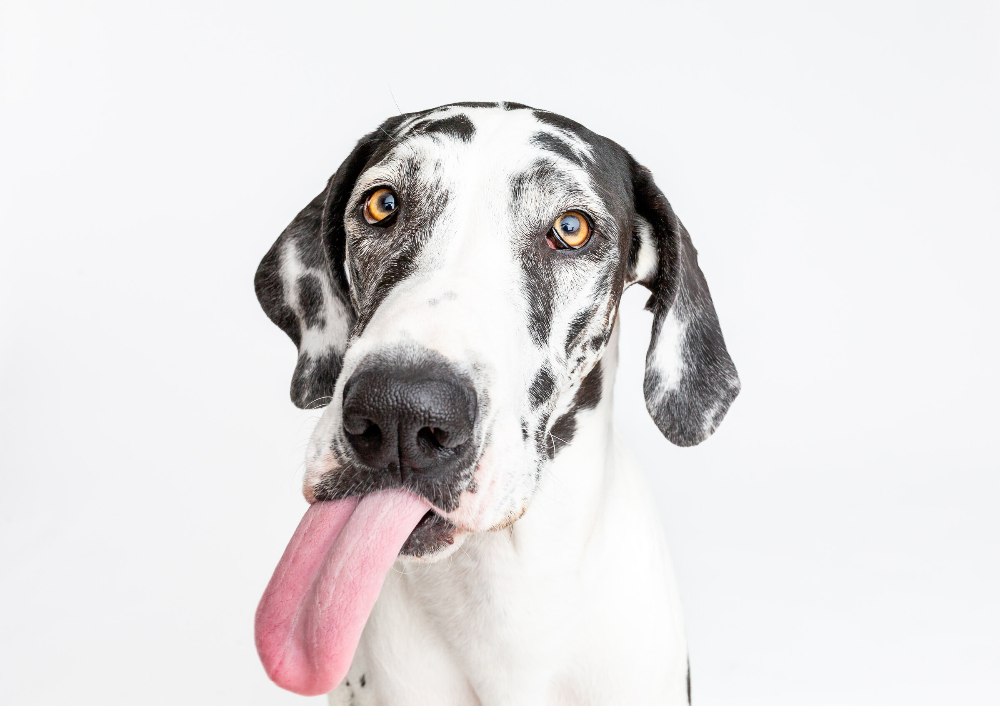
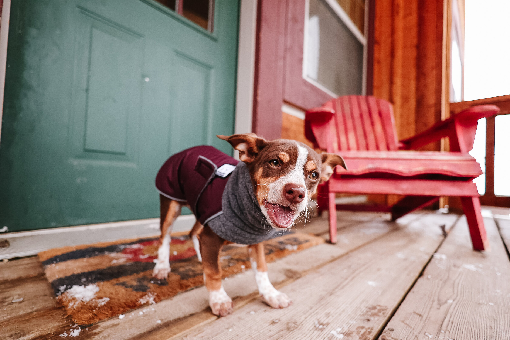
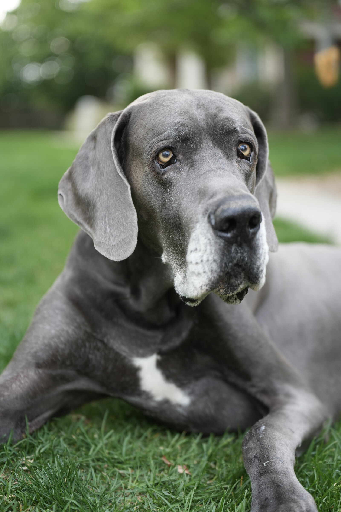
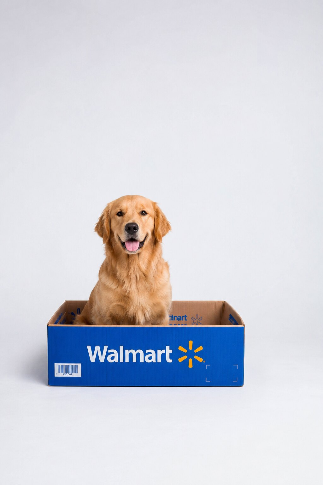
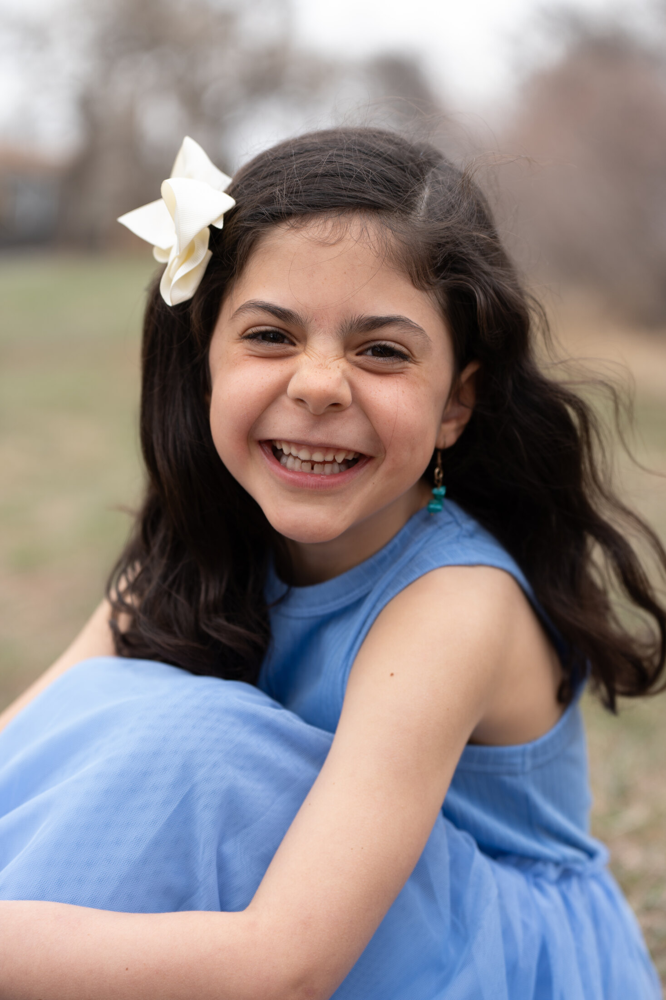
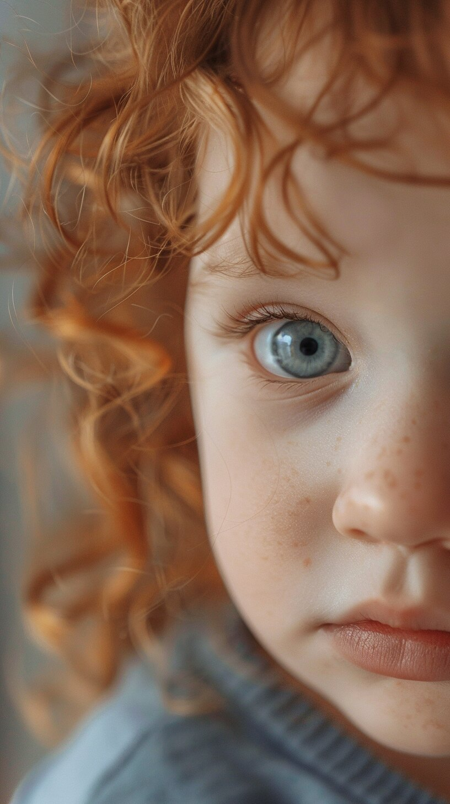

Photography portfolio / Portraits & pets
Natalie Bendinelli Photography
Portrait and pet sessions with warm natural light, quiet direction, and an edit that lets character carry the frame.
View workChoose a gallery
Each collection below keeps its own mood, subject, and edit while still living inside the larger portfolio.

Window Room
Portrait / Natural light / CharacterBotanical Studio
Portrait / Plants / Warm interiors
Birthday Pets
Pets / Studio / Celebration
Studio Pets
Pets / Studio / Portraits
Porch Pup
Pets / Cabin porch / Movement
Max Memorial
Pets / End-of-life / Family
Brand Work
Commercial / Product / Studio concepts
Family Field
Family / Children / Outdoors
Toddler Study
Family / Childhood / Close studiesSelected work
Portrait, pet, family, and brand galleries are live below. Each frame opens into a full-screen view for slower looking.
Window Room
Eight-frame portrait study in a quiet window-lit room.
Botanical Studio
A separate portrait edit with cream layers, warm wood, books, greenery, and saturated interior light.
Birthday Pets
A playful birthday studio set with party hats, balloons, cake, and expressive dog portraits.
Studio Pets
Clean-background dog portraits, playful puppies, and expressive Great Dane studies.
Porch Pup
A compact pet story on a red cabin porch, with sweater texture, warm wood, and quick little expressions.
Max Memorial
A quiet end-of-life pet session with Max, his people, soft grass, and close attention to the details that matter.
Brand Work
Commercial-style studio concepts for pet retail, athletic, art supply, and product-led family stories.
Family Field
A soft outdoor children and sibling portrait set in blue dresses, overcast light, and natural movement.
Toddler Study
Nine close studies of childhood expression, soft detail, green light, and one low-key profile.
Contact
Make the next step obvious.
Use this space for your booking email, Instagram, inquiry form, or the single best next step after someone finishes the gallery.